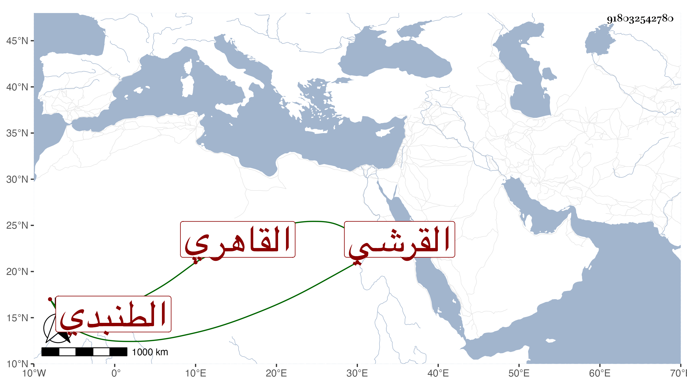

0902Sakhawi.DawLamic.ITO20230111-ara1.EIS1600.918032542780
Biography ID: 918032542780
686
محمد بن صالح التاج أبو الخير بن العلم القرشي الطنبدي الأصل القاهري الشافعي الفافا ويعرف كسلفه بابن عرب . اشتغل وبرع في الفرائض وكتب على المجموع تعليقا ، وحضر عند شيخنا في الإملاء وشارك في الفقه وغيره ، ورافق الزين قاسم الزبيري في الشهادة وقتا وكتب للشهود وراقه ثم استنابه العلم البلقيني فمن بعده في القضاء ، وكان خيرا . مات في العشر الثاني من ربيع الأول سنة ثلاث وسبعين عن بضع وخمسين رحمه الله .
